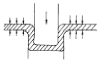
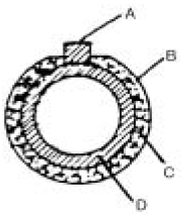
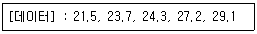

압연기능장 (2005-07-17 기출문제)
1과목: 임의 구분
1. 점결함(Point defect)에 속하지 않는 것은?
- 원자 공동 (Vacancy)
- 격자간 원자 (Interstitial atom)
- 치환형 원자 (Substitutional atom)
- 전위 (Dislocation)
(정답률: 96%)

2. 냉간압연의 Temper Rolling(調質壓延)의 목적과 관련이 가장 적은 것은?
- Annealing 형상 교정
- 항복연신의 제거
- 표면조도 조정
- 압연에 의한 두께 감소
(정답률: 89%)
3. 압연기의 롤 베어링에 가장 좋은 그리이스 윤활 방법은?
- 강제 급유법
- 컵 급유법
- 손 급유법
- 충전 급유법
(정답률: 84%)
4. 강괴(lngot) 중에 가장 탈산정도가 높은 것은?
- 캡드강
- 킬드강
- 림드강
- 세미킬드강
(정답률: 87%)
5. 슬랩(slab) 강편은 어떠한 제품을 만드는 반성품인가?
- 대강박판, 형강
- 소형 형강, 봉강, 선재
- 중후판, 열연코일
- 대형 형강, 시이트 파일
(정답률: 88%)
6. 냉간 압연에서 발생하는 결함이 아닌 것은?
- Scale
- Edge crack
- Pinch tree
- Dent
(정답률: 91%)
7. 로울을 수용하는 견고한 2개의 롤 하우징(Roll Housing)을 무엇이라고 하는가?
- 쵸크(Chock)
- 솔 플레이트(Sole plate)
- 스탠드(Stand)
- 블록(Block)
(정답률: 90%)
8. 스테인리스강의 대표적 종류가 아닌 것은?
- 페라이트계
- 펄라이트계
- 오스테나이트계
- 마텐자이트계
(정답률: 62%)
9. 중후판을 압연한 후에 노말라이징(normalizing)열처리 하면 충격값이 개선되는 이유는?
- 잔류 응력이 생기고 결정립이 성장하여 전성이 증가하기 때문
- 결정립이 조대화되고 강도, 항복점이 높아지기 때문
- 내부응력이 제거되고 결정립이 미세화하여 인성이 증가하기 때문
- 결정립이 미세화하여 연신율, 단면수축률이 감소하며, 잔류응력이 잔존하기 때문
(정답률: 73%)
10. 표면 경화처리를 필요로 하는 경우는 어느 것인가?
- 표면은 충격성이 크고, 내부는 인성이 요구될 때
- 표면은 인성이 크고, 내부는 인성이 요구될 때
- 표면은 경도가 크고, 내부는 인성이 요구될 때
- 표면은 경도가 크고, 내부는 연신성이 요구될 때
(정답률: 82%)
11. 소성가공의 주목적은 금속에 외력(外力)을 가하여 소성 변형 시켜서 여러가지 형태의 물체를 만들고, 금속의 물리적 성질을 향상시키는데 있다. 그림과 같은 소성가공법을 무엇이라 하는가 ?

- 신선
- 전조
- 선삭
- 디이프 드로오잉
(정답률: 80%)
12. 가열로에 사용되는 버너(burner)의 구비조건으로 틀린 것은?
- 연소량 조절 범위가 클 것
- 화염의 상태가 안정될 것
- 노즐의 공(孔)이 클 것
- 보수, 운전이 간편할 것
(정답률: 90%)
13. 냉간 압연재를 소재로 사용하는 표면처리 재료는?
- 용융도금강판
- 슬래브
- 블루움
- 후판
(정답률: 84%)
14. 압연에 필요한 동력을 감소시키기 위한 것과 관계가 있는 것은?
- 여러개의 롤을 사용한다.
- 베어링을 크게 한다.
- 하우징의 진동을 없앤다.
- 롤의 직경을 작게 한다.
(정답률: 70%)
15. 압연재는 들어갈 때의 부피와 나올 때의 부피가 같다. 일정한 속도로 어느 단면을 통과하는 시간당 재료의 부피는? (단,L[m3/sec] :시간당 통과하는 재료의 부피, F[mm2] :단면적, V[m/sec]:압연재의 속도)
- L = (V/F) × 10-3
- L = (V/F) × 10-6
- L = F × V × 10-6
- L = F × V × 10-3
(정답률: 79%)
16. 배치형 가열로에 대한 설명으로 틀린 것은?
- 두께 큰 소재가열에 적합하다.
- 연속적으로 추출하기에 불리하다.
- 예열대, 가열대, 균열대 등이 있다.
- 연료소비량이 많다.
(정답률: 76%)
17. 냉연강판의 제조공정 순서로 맞는 것은?
- 열연코일 - 냉간압연 - 산세 - 표면청정 - 소둔 - 조질압연
- 열연코일 - 산세 - 냉간압연 - 표면청정 - 소둔 - 조질압연
- 열연코일 - 냉간압연 - 산세 - 표면청정 - 조질압연 - 소둔
- 열연코일 - 산세 - 냉간압연 - 표면청정 - 조질압연 - 소둔
(정답률: 76%)
18. H형강, I형강, 레일 등과 같은 형강을 제조하기에 가장 적합한 압연기는?
- 센지미어 압연기
- 4단식 압연기
- 유니버셜 압연기
- 유성 압연기
(정답률: 76%)
19. 유성 압연기에서 1회에 압하가 가능한 것은?
- 80% 정도
- 60% 정도
- 70% 정도
- 90% 정도
(정답률: 77%)
20. 롤의 직경이 300mm, 회전수 150rpm 일 때 압연되는 재료의 출구속도가 3.5m/sec 이었다면 선진율 약(%)인가?
- 15%
- 27%
- 36%
- 48%
(정답률: 55%)
2과목: 임의 구분
21. 롤에 대한 흡착성이 우수하고 마찰계수가 낮아 압연윤활성이 양호하여 고속압연이 가능한 압연유는?
- 곡분유계 수용성 압연유
- 광유계 수용성 압연유
- 혼성계 수용성 압연유
- 지방계 수용성 압연유
(정답률: 78%)
22. 다음 중 로울 크라운(roll crown)에 관한 설명으로 맞는 것은?
- 로울의 지름과 로올목의 지름 차
- 로울의 중앙부의 지름과 양단부의 차
- 로울의 지름과 연결부 지름의 차
- 상하 로울 지름의 차
(정답률: 86%)
23. 압연재료의 열간 가공을 위한 가열이나 열처리 등에 사용되고 있는 일반적인 연료가 아닌 것은?
- 고로 가스
- 코크스로 가스
- 오일 가스
- 전열
(정답률: 80%)
24. 유연상생시스템(FMS)의 특징으로 틀린 것은?
- 제품의 수명이 짧아지고 고객의 요구가 다양해짐에 따라 이에 적절히 대처할 수 있다.
- 다양한 제품을 동시에 처리하므로 수요의 변화에 유연하게 대처할 수가 있다.
- 단품이나 유사한 제품을 대량으로 생산하는 방식이다.
- FMS의 형태는 생산되는 대상 제품의 종류와 양에 따라 다양한 형태가 있다.
(정답률: 83%)
25. 재료를 압연할 때 로울의 주속도와 재료의 속도가 같은 곳은?
- 선진점
- 후진점
- 중립점
- 상대운동
(정답률: 91%)
26. 두께20mm의 판재를 6mm로 압연할 때 압하량과 압하율은？
- 14mm, 70%
- 6mm, 60%
- 20mm, 60%
- 26mm, 30%
(정답률: 87%)
27. 금속 재료의 열간 가공성에 영향을 주는 인자 중 야금학적 인자에 해당되지 않는 것은?
- 화학 조성
- 존재하는 상의수
- 가열 및 가공온도
- 결정입도
(정답률: 66%)
28. 냉간압연에 대한 설명으로 틀린 것은?
- 냉간압연 작업을 하기 전에 산세를 하여 핫 코일의 스케일을 제거한다.
- 냉간압연을 하면 판 두께의 정도가 아주 높다.
- 냉간압연기는 4단연속식, 센지미어다단식, 스테켈식 등 여러 종류가 있다.
- 전(全)압하율이 많으면 소둔에 의해 재결정립이 조대화된다.
(정답률: 70%)
29. 주철의 조직 중 스테다이트(steadite)란?
- Fe - FeS - Fe3P의 3원 공정상
- Fe - FeS - Fe3C의 3원 공정상
- Fe - Fe3C - MnS의 3원 공정상
- Fe - Fe3C - Fe3P의 3원 공정상
(정답률: 68%)
30. 다음 중 증압기의 사용목적은？
- 압력증폭
- 속도제어
- 에너지 저장
- 스틱-슬립 현상 방지
(정답률: 88%)
31. 황(S)이 과다하게 되면 FeS가 형성되어 균열이 발생하기 쉽다. S를 제거하는데 첨가하는 원소는?
- Cu
- Al
- Mn
- Bi
(정답률: 92%)
32. 슬리팅(slitting)작업의 목적과 관련이 가장 적은 것은?
- 형상교정
- 응력제거
- 검사
- 스트립의 폭 자름
(정답률: 69%)
33. HOT-STRIP 제조 공정 중 조괴, 분괴를 생략하는 공정은?
- 제강
- 가열
- 연속주조
- 열간압연
(정답률: 83%)
34. 압연기에서 압하율을 크게 하는 조건으로 틀린 것은?
- 롤(Roll)회전속도를 크게 한다.
- 압연온도를 높혀 준다.
- 지름이 큰 롤을 사용한다.
- 압연재를 뒤에서 밀어준다.
(정답률: 78%)
35. 사고 발생 원인을 가장 많이 일어나는 순서로 나열한 것은?
- 물적 원인 → 자연적 재해 → 인적 원인
- 자연적 재해 → 인적 원인 → 물적 원인
- 인적 원인 → 물적 원인 → 자연적 재해
- 자연적 재해 → 물적 원인 → 인적 원인
(정답률: 94%)
36. 압연속도와 마찰계수와의 관계 중 맞는 것은?
- 압연속도가 증가하면 마찰계수는 감소한다.
- 압연속도가 증가하면 마찰계수는 증가한다.
- 압연속도와 마찰계수는 상호관계가 없다.
- 압연속도에 관계없이 마찰계수는 일정한 값을 가진다.
(정답률: 89%)
37. 가열로의 열정산중에서 입열항목에 해당되지 않는 것은?
- 공기의 현열
- 연료의 현열
- 스케일의 현열
- 연료 무화제가 지입하는 열
(정답률: 83%)
38. 스케일생성에 영향을 주는 조건으로 틀린 것은?
- 재료의 크기, 형상, 재질
- 로의 형식
- 가열시간 및 온도
- 연료소비량
(정답률: 76%)
39. 열간압연시 가열, 압연 및 냉각 조건을 제어하여 강의 기계적성질을 개선하는 기술을 말하며, 합금원소 첨가 및 압연온도 제어 후, 수래에 의한 가속 냉각으로 기계적 성질을 향상시키는 방법은?
- 형상제어 압연 방법
- 판 두께 제어압연 방법
- TMCP(Thermo Mechanical Control Process)
- 롤 굽힘 방법(Roll bending)
(정답률: 87%)
40. 시트(sheet) 절단기로 주로 쓰이는 것은?
- 로타리 시어(Rotary shear)
- 다운 컷 시어(Down cut shear)
- 플라잉 시어(Flying shear)
- 기계 톱(Sawing machine)
(정답률: 84%)
3과목: 임의 구분
41. 연속식 가열로가 아닌 것은?
- Pusher식 가열로
- Walking Beam식 가열로
- Rail식 가열로
- 회전로상의 가열로
(정답률: 67%)
42. 워-터 인젝션(Water Injection)법은 압연유와 냉각수를 혼합시켜 압연기의 어느 부분에 분사시켜 주는가?
- 작업 롤(Work Roll)
- 백업 롤(Back up Roll)
- 롤-넥(Roll neck)
- 스크루(Screw)
(정답률: 77%)
43. Roller의 구성이 아닌 것은?
- 목(Neck)
- 몸체(body)
- 연결부(Wobbler)
- 머리(crown)
(정답률: 80%)
44. 압연시 윤활유로 사용되는 광유(mineral oil)에 대한 설명으로 틀린 것은?
- 동식물유에 비하여 윤활성능이 우수하다.
- 물과의 에멀션화성이 좋다.
- 열에 의한 기름찌꺼기의 발생이 적어 세척공정을 생략할 수 있다.
- 석유계이며 주성분은 탄화수소이다.
(정답률: 65%)
45. 공장 내의 자동반송 방식 중 무궤도 방식에 대한 설명으로 틀린 것은?
- 설치장소를 차지하지 않는다.
- 주행 경로 수정이 용이하다.
- 반송차의 설치대수 조정이 가능하다.
- 인식장치에 의해 충돌방지가 어렵다.
(정답률: 84%)
46. 냉간압연에서 롤(Roll)과 스트립(strip)의 접촉면에 마찰을 감소시켜 낮은 압하력으로 압연하므로써 제품의 표면을 아름답게 하는 압연 윤활유의 요구되는 성질로 틀린 것은?
- 마찰계수가 적을 것
- 압연재의 탈지성이 양호할 것
- 유성 및 유막강도가 적을 것
- 압연재 표면에 균일하게 부착할 것
(정답률: 88%)
47. 가열의 스키드(Skid) 단면도 중 A의 명칭은?

- 스키드레일
- 스타이드
- 캐스타블 단열재
- 냉각수냉파이프
(정답률: 87%)
48. 무접점 시퀀스의 장점을 나열한 것이 아닌 것은?
- 동작속도가 빠르다.
- 고변도 사용에도 견디고 수명이 길다.
- 장치의 축소화가 가능하다.
- 별도의 전원을 필요로 한다.
(정답률: 85%)
49. 열간 압연작업시 마찰계수 μ, 접촉각을 θ라 할 때 압연재가 Roll 사이를 통과하여 압연될 조건은?
- μ ≥ tanθ
- μ ≥ sinθ
- μ ≤ cosθ
- μ ≤ tanθ
(정답률: 78%)
50. 다단식 압연기로서 금속강판, 스테인리스 강판의 압연에 많이 이용되는 압연기는?
- 데라 압연기
- 센지미어 압연기
- 클러스터 압연기
- 풀라 내터리 압연기
(정답률: 87%)
51. 황동의 압연시 황동 중 Pb, Bi, Sb, As 등이 존재하면 어떻게 되는가?
- 강도가 상승한다.
- 표면이 미려해진다.
- 윤활이 필요없다.
- 가공성이 나빠 압연시 균열이 생긴다.
(정답률: 79%)
52. 열간 압연 후 냉각시 고려 되어야 할 3요소가 아닌 것은?
- 냉각온도
- 냉각치수
- 냉각속도
- 균일냉각
(정답률: 89%)
53. 설계의 생산성 향상에서 기존의 설계방법에 비해 CAD가 생산성을 높이는 분야로써 틀린 것은?
- 복잡한 도면을 작성할 때
- 반복되는 부품을 설계할 때
- 부품들이 서로 대칭될 때
- 많은 부품이 한번씩 사용될 때
(정답률: 83%)
54. 철강재료의 현미경 조직에 대한 설명으로 틀린 것은?
- Ferrite는 극히 경하고 연성이 크며, 소입에 의해 경화된다.
- Fe3C는 대단히 경하고 취약하다.
- Pearlite는 ferrite에 비해 강하고 경하다.
- Fe3C는 백색침상의 금속간 화합물이다.
(정답률: 64%)
55. 다음 중에서 작업자에 대한 심리적 영향을 가장 많이 주는 작업측정의 기법은?
- PTS법
- 워크 샘플링법
- WF법
- 스톱 워치법
(정답률: 76%)
56. 생산보전(PM:Productive Maintenance)의 내용에 속하지 않는 것은?
- 사후보전
- 안전보전
- 예방보전
- 개량보전
(정답률: 73%)
57. 다음 중 로트별 검사에 대한 AQL 지표형 샘플링검사 방식은 어느 것인가?
- KS A ISO 2859-0
- KS A ISO 2859-1
- KS A ISO 2859-2
- KS A ISO 2859-3
(정답률: 69%)
58. 여력을 나타내는 식으로 가장 올바른 것은?
- 여력 = 1일 실동시간 × 1개월 실동시간 × 가동대수
- 여력 = (능력 - 부하) ⒡ 1/100
- 여력 = (능력 - 부하)/능력 ⒡ 100
- 여력 = (능력 - 부하)/부하 ⒡ 100
(정답률: 77%)
59. 다음 중 계량치 관리도는 어느 것인가?
- R 관리도
- nP 관리도
- C 관리도
- U 관리도
(정답률: 66%)
60. 다음 데이터로부터 통계량을 계산한 것 중 틀린 것은?

- 중앙값(Me) = 24.3
- 제곱합(S) = 7.59
- 시료분산(s2) = 8.988
- 범위(R) = 7.6
(정답률: 68%)